정보보안기사 (2016-09-24 기출문제)
1과목: 시스템 보안
1. 다음의 공격도구들이 공통적으로 제공 기능은?
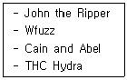
- Brute Force 공격
- Web 공격
- 스니핑 공격
- 사회 공학 공격
(정답률: 75%)

2. 괄호 안에 들어갈 말로 옳은 것은?
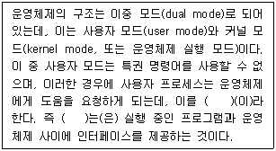
- 시스템 관리(system management)
- 시스템 호출(system call)
- 프로세스 관리(process management)
- 스케줄링(scheduling)
(정답률: 65%)
3. 다음을 운영체제의 5계층에 따라 계층별로 올바르게 나열한 것은?
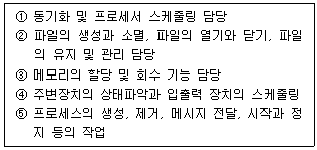
- 1계층(①)-2계층(③)-3계층(⑤)-4계층(④)-5계층(②)
- 1계층(④)-2계층(③)-3계층(⑤)-4계층(①)-5계층(②)
- 1계층(②)-2계층(④)-3계층(⑤)-4계층(③)-5계층(①)
- 1계층(③)-2계층(①)-3계층(②)-4계층(④)-5계층(⑤)
(정답률: 42%)
4. 휘발성 증거들의 수집 순서를 우선순위가 높은 것부터 올바르게 배열한 것은?
- 레지스터와 캐시, 시스템 메모리의 내용, 임시파일시스템, 디스크의 데이터
- 시스템 메모리의 내용, 레지스터와 캐시, 임시파일시스템, 디스크의 데이터
- 레지스터와 캐시, 임시파일시스템, 시스템 메모리의 내용, 디스크의 데이터
- 레지스터와 캐시, 디스크의 데이터, 시스템 메모리의 내용, 임시파일시스템
(정답률: 68%)
5. UNIX 또는 리눅스 시스템에서 똑같은 작업을 사용자가 지정된 시간에 반복 작업하기 위해서 cron 테이블을 작성한다. 만약 사용자가 매주 토요일 오전 10시 정각에 'mytest'라는 프로그램을 주기적으로 수행시키기 위해 작성한 cron 테이블 내용 중 맞는 것은?
- 0 10 6 * * mytest
- 0 10 * * 6 mytest
- 0 10 * 6 * mytest
- 0 10 6 * * mytest
(정답률: 34%)
6. 사용자가 자신의 홈 디렉터리 내에서 새롭게 생성되는 서브파일에 디폴트 파일 허가권을 파일 소유자에게는 읽기와 쓰기, 그룹과 other에게는 읽기만 가능하도록 부여하고 싶다. 로그인 셸에 정의해야 하는 umask의 설정갑은 어느 것인가?
- umask 644
- umask 022
- umask 330
- umask 033
(정답률: 61%)
7. Cron에 대한 설명으로 옳지 않은 것은?
- 정기적인 작업을 지정시간에 처리하기 위해 사용한다.
- Cron에 의해 수행된 작업에 관한 로그는 기본적으로 /etc/default/cron 파일에 저장된다.
- 시간별, 일별, 주별, 월별로 작업을 정의할 수 있다.
- /etc/crontab 파일에 처리할 작업 목록이 정의되고 저장되어 있다.
(정답률: 66%)
8. 개인 PC 보안에 관한 점검 사항으로 적절하지 않은 것은?
- 디렉터리(데이터 공유), 패스워드 미설치 점검
- 바이러스 백신을 활용한 바이러스 웜 점검
- 화면 보호기 암호 설정
- 라우팅 테이블 점검
(정답률: 63%)
9. 하드웨어와 소프트웨어 설치 드라이버 설정에 대한 정보를 포함하고 있는 윈도우 레지스트리 키(Registry Key)는?
- HKEY_LOCAL_MACHINE
- HKEY_CLASS_ROOT
- HKEY_CURRENT_USER
- HKEY_USERS
(정답률: 75%)
10. 다음 xinetd에 대한 설정으로 틀린 설명은?
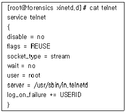
- 현재 telnet 서비스는 동작 중에 있다.
- wait 값이 no인 것으로 보아 single thread로 실행됨을 의미한다.
- 소켓 형태는 스트림 기반의 서비스이다.
- 해당 서비스를 실행할 데몬 프로그램은 /user/sbin/in.telnetd 이다.
(정답률: 69%)
11. 버퍼 오버플로우 공격의 대응수단으로 적절하지 않은 것은?
- 스택상에 있는 공격자의 코드가 실행되지 못하도록 한다.
- 프로세스 주소 공간에 있는 중요 데이터 구조의 위치가 변경되지 않도록 적재 주소를 고정시킨다.
- 함수의 진입(entry)과 종료(exit) 코드를 조사하고 함수의 스택 프레임에 대해 손상이 있는지를 검사한다.
- 변수 타입과 그 타입에 허용되는 연산들에 대해 강력한 표 기법을 제공하는 고급수준의 프로그래밍 언어를 사용한다.
(정답률: 39%)
12. 다음 중 가장 바르지 않은 것은?
- wtmp: 사용자들이 로그인, 로그아웃한 정보를 가지고 있다.
- pacct: 사용자가 로그인한 후부터 로그아웃할 때까지의 입력한 명령과 시간, 작동된 tty 등에 대한 정보를 가지고 있다.
- utmp: 시스템에 현재 로그인한 사용자들에 대한 상태 정보를 가지고 있다.
- btmp: 사용자별로 가장 마지막에 로그인한 시간과 접속 IP, tty 등에 대한 정보를 가지고 있다.
(정답률: 59%)
13. 악성코드의 종류는 무엇인가?
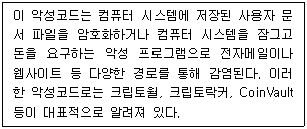
- 바이러스
- 루트킷
- 웜
- 랜섬웨어
(정답률: 76%)
14. 스택 버퍼 오버플로우 공격의 수행절차를 순서대로 바르게 나열한 것은?
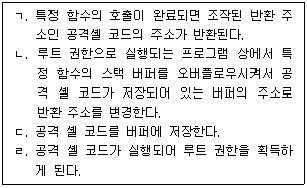
- ㄱ→ㄴ→ㄷ→ㄹ
- ㄱ→ㄷ→ㄴ→ㄹ
- ㄷ→ㄴ→ㄱ→ㄹ
- ㄷ→ㄱ→ㄴ→ㄹ
(정답률: 45%)
15. Process ID(PID) 1번을 가지고 있는 프로세스는 무엇인가?
- init
- 부트로더
- OS 커널
- BIOS
(정답률: 85%)
16. 백도어를 사용하여 접근하는 경우 정상적인 인증을 거치지 않고 관리자의 권한을 얻을 수 있다. 이에 대한 대응책으로 옳지 않은 것은?
- 주기적으로 파일의 해쉬값을 생성하여 무결성 검사를 수행한다.
- 불필요한 서비스 포트가 열려있는지 확인한다.
- 윈도우의 작업관리자나 리눅스 시스템의 ps 명령어를 통해 비정상적인 프로세스가 있는지 확인한다.
- promiscuous로 변경되어 있는지를 주기적으로 검사한다.
(정답률: 55%)
17. 해킹기법과 그 대응책에 대한 설명으로 옳지 않은 것은?
- Buffer Overflow 공격: 프로그램밍 시 경계값 검사를 적용하고 최신 운영체제로 패치
- Format String Bug 공격: 데이터 형태(포맷 스트링)에 대한 명확한 정의
- Denail of Service 공격: MAC 주소값을 고정으로 설정
- SYN Flooding 공격: SYN Received의 대기시간을 축소
(정답률: 68%)
18. 다음 설명에 해당되는 공격 유형은?
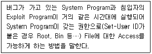
- Stack Based Buffer Overflow
- Format String
- Race Condition
- Synchronization
(정답률: 44%)
19. 리눅스 서버에서 외부의 모든 Ping of Death 공격을 방어하기 위하여 리눅스의 기본 커널 옵션을 조정하려고 한다. 적절한 명령어는?
- sysctl -w net.ipv4.icmp_echo_ignore_all=0
- sysctl -w net.ipv4.icmp_echo_ignore_all=1
- sysctl -n net.ipv4.icmp_echo_ignore_broadcasts=1
- sysctl -n net.ipv4.icmp_echo_ignore_broadcasts=0
(정답률: 45%)
20. 다음은 크래커 A가 남긴 C소스 코드와 바이너리 파일이다. 이에 대한 설명으로 적합한 것은?
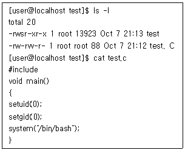
- setgid 시스템 콜의 인자를 0으로 준 것으로 보아 Race Condition 기법의 공격이다.
- /bin/sh를 실행시키는 것으로 보아 Sniffing 기법이다.
- setuid 시스템 콜의 인자가 0이고 컴파일된 바이너리 파일의 퍼미션이 4755인 것으로 보아 루트 권한을 탈취하는 백도어이다.
- main 함수의 리턴형태가 void 이므로 Format String Attack으로 보인다.
(정답률: 53%)
2과목: 네트워크 보안
21. 다음 지문에 해당하는 ICMP 오류 메시지는?
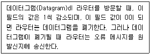
- 목적지 도달 불가능
- 시간 경과
- 매개변수 문제
- 발신지억제
(정답률: 42%)
22. 네트워크에 존재하는 많은 종류의 장비 중 리피터(Repeater)에 대한 설명으로 잘못된 것은?
- 물리계층에서 동작하는 장비이다.
- 감쇄되는 신호를 증폭하고 재생하여 전송한다.
- 연속적으로 2개 이상의 케이블을 연결함으로써 케이블의 거리 제한을 극복한다.
- 이더넷 멀티포트 리피터(Ethernet Multi-port Repeater) 또는 연결 집중 장치라고도 불린다.
(정답률: 44%)
23. 다음 중 전문가 시스템(Expert System)을 이용한 IDS에서 사용되는 침입 탐지기법은?
- Behavior Detection
- State Transition Detection
- Knowledge Based Detection
- Statistical Detection
(정답률: 70%)
24. 다음 중 프로토콜과 포트번호의 연결이 옳지 않은 것은 무엇인가?
- HTTP - 80
- SMTP - 25
- DNS - 53
- TELNET - 20
(정답률: 77%)
25. 다음 지문이 설명하는 것은?
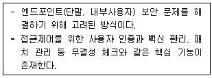
- Network Access Control
- Network Management System
- Enterprise Security Management
- Unigied Threat Manager
(정답률: 68%)
26. 다음 지문에서 설명하는 것은?
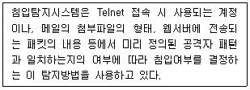
- Signatur-based detection
- Anomaly-based detection
- Network Behavior detection
- Stateful Protocol detection
(정답률: 50%)
27. 서브넷팅에 대한 설명 중 틀린 것은?
- 네트워크 세그먼트로 나눈 개별 네트워크를 말한다.
- 서브넷 마스크는 네트워크 ID와 호스트 ID를 구분 짓는 역할을 한다.
- 서브넷 마스크는 32비트의 값을 가진다.
- 각각의 서브넷들이 모여 물리적인 네티워크를 이루어 상호 접속을 수행한다.
(정답률: 41%)
28. 다음 중 무결성 점검을 위해 사용하는 프로그램은?
- tripwire
- tcpdump
- hunt
- dsniff
(정답률: 70%)
29. 다음 중 호스트 서버와 인터넷 게이트웨이 사이에서 메시지를 제어하고오류를 알려주는 프로토콜은 어느 것인가?
- SMTP
- SSH
- ICMP
- IGMP
(정답률: 48%)
30. 다음 중 SIEM에 사용되는 프로그램과 가장 거리가 먼 것은?
- SPLUNK
- QRadar
- Arcsight
- EnCase
(정답률: 52%)
31. VPN 터널을 위해 사용할 수 없는 것은?
- IPSec
- PPTP
- SSL
- RTP
(정답률: 50%)
32. 다음 지문은 어떤 종류의 ICMP 메시지를 설명하는 것인가?
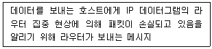
- Source Quench.
- Echo Request
- Echo Reply
- Destination Unreachable
(정답률: 39%)
33. 네트워크를 통해 무선 LAN을 공격하기 위한 기술적 공격 방 식이 아닌 것은?
- 구성 설정 초기화
- 무선 전파 전송 방해
- 불법 AP를 통한 전송 데이터 수집
- 암호화 되지 않은 통신 데이터 도청
(정답률: 40%)
34. 다음은 IPSec의 AH 프로토콜이 하는 역할에 대한 설명이다. 맞는 것은?
- 라우터와 라우터 간의 IP 패킷을 암호화한다.
- 단말과 단말 간의 IP 패킷을 암호화한다.
- 단말과 라우터 간의 IP 패킷에 대한 송신 인증 및 무결성 서비스를 계공한다.
- 단말과 라우터 간의 IP 패킷에 대한 송신 인증, 무결성 그리고 암호화 서비스를 제공한다.
(정답률: 46%)
35. 다음은 IPSec 터널모드에서 IP 패킷을 암호화하고 인증 기 능을 수행하는 그림이다. ㉠과 ㉡에 추가되는 헤더 정보를 바르게 연결한 것은?
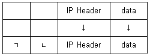
- new IP header ESP/AH
- ESP/AH new IP header
- IKE header new IP header
- new IP header IKE header
(정답률: 47%)
36. DDoS 긴급 대응 절차 순서를 올바르게 나열한 것은?
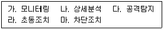
- 라, 다, 가, 나, 마
- 라, 가, 마, 다, 나
- 가, 다, 라, 나, 마
- 가, 다 나, 라, 마
(정답률: 83%)
37. 전통적인 응용 게이트웨이 방식의 방화벽에 대한 설명 중 옳지 않은 것은?
- 외부 네트워크에 연결된 컴퓨터는 내부 네트워크에 연결된 컴퓨터에 직접 연결되지 않고 프락시를 통해서만 연결된다.
- 외부 네트워크와 내부 네트워크 간에 전달되는 모든 데이터는 하나의 프락시를 통해 처리된다.
- 프락시를 통해 2개의 서로 다른 연결이 설정되므로 외부 네트워크에 연결된 사용자들에게 내부 네트워크 정보를 숨기는 효과가 있다.
- 응용 계층에서 처리하는 데이터에 대한 점검 기능을 수행하므로 패킷 필터링 수준의 방화벽보다 우수한 보안 서비스를 제공한다.
(정답률: 39%)
38. 다음 중 패킷 필터링 시에 패킷 헤더에서 검출할 수 있는 정보가 아닌 것은?
- 목적지 IP 주소
- TCP/UDP 소스 포트
- ICMP 메시지 타입
- 패킷의 생성 시간
(정답률: 57%)
39. 지문의 특성을 갖는 공격 방법은 무엇인가?
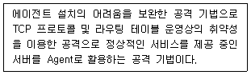
- Botnet
- DRDoS
- APT
- Sniffing
(정답률: 56%)
40. 다음의 공격 방법을 방어하기 위한 침입차단시스템 유형으로 가장 적절한 것은?
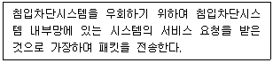
- 응용레벨 게이트웨이(Application level Gateway)
- 회로레벨 게이트웨이(Circuit level gateway)
- 패킷 필터링 라우터(Packet giltering router)
- 상태검사 패킷 필터(State inspection packet filter)
(정답률: 34%)
3과목: 어플리케이션 보안
41. 다음 중 이메일(E-mail) 송수신을 위해서 사용되는 프로토콜로 가장 적절하지 않은 것은?
- SMTP
- POP3
- IMAP
- SBMP
(정답률: 70%)
42. 전자 상거래에 활용되는 암호화에 대한 설명이 적당하지 않은 것은?
- 전자상거래에 사용되는 암호시스템은 공개키보다 대칭키를 사용하는 시스템이다.
- 전통적으로 정보의 보안을 유지하는 가장 효과적인 방법은 암호화를 도입하는 것이다.
- 암호화(Encryption)는 데이터를 읽을 수 없는 형태로 만드는 것을 의미한다.
- 암호를 이용한 암호 방법은 자격이 없는 임의의 방문자로부터 정보를 숨김으로써 개인의 프라이버시를 보장한다는데 의의가 있다.
(정답률: 49%)
43. 파일 업로드 취약점을 이용한 공격으로 가장 많이 사용되는 유형은 무엇인가?
- SQL 삽입 공격
- 웹셸 공격
- CRSF 공격
- 쿠키 하이재킹 공격
(정답률: 46%)
44. 다음 OTP 생성 방식은 무엇인가?
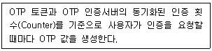
- 질의·응답 방식
- 이벤트 동기화 방식
- 시간 동기화 방식
- S/KEY 방식
(정답률: 44%)
45. 다음 중 웹 브라우저와 웹 서버 간에 안전한 정보 전송을 위해 사용되는 암호화 방법으로 가장 적절한 것은?
- SSH(Secure Shell)
- PGP(Pretty Good Privacy)
- SSL(Secure Socket Layer)
- S/MIME(Secure Multipurpose Internet Mail Extension)
(정답률: 53%)
46. 다음 전자메일 프로토콜은 무엇인가?
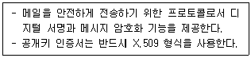
- IMAP
- SMTP
- S/MIME
- PGP
(정답률: 67%)
47. 다음 지문이 설명하는 공격기법은 무엇인가?
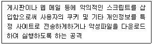
- 파라미터 변조 공격
- 쿠키/세션 위조
- XSS(Cross Site Scripting)
- SQL Injection
(정답률: 74%)
48. 다음 중 FTP 명령의 수행 기능을 올바르게 설명한 것은?
- RMD: 파일 다운로드
- STOR: 원격지 파일 저장
- CWD: 디렉터리 생성
- MKD: 디렉터리 목록 보기
(정답률: 67%)
49. 입력 값에 대한 검증을 누락하거나 부적절한 검증, 데이터의 잘못된 형식지정 등으로 인해 발생할 수 있는 보안 취약점과 가장 거리가 먼 것은?
- SQL 삽입
- 크로스사이트 스크립트
- CMD 삽입
- 경쟁 조건
(정답률: 61%)
50. 다음 중 커버로스(Kerberos)의 특징이 아닌 것은?
- 재생공격을 예방할 수 있다.
- 데이터의 무결성을 제공한다.
- 타임스템프는 필요하지 않다.
- 대칭키를 이용한 기밀성 제공이 가능하다,
(정답률: 43%)
51. 메일 서버 서비스에 대해서 할 수 있는 서버 공격 기법은 무엇인가?
- Active Contents 공격
- 트로이목마 공격
- 서비스 거부(DoS, DDoS) 공격
- Mail Bomb
(정답률: 63%)
52. 컴퓨터 메모리는 사용되는 방식에 따라 여러 개의 영역으로 나누어 생각할 수 있는데 프로그램 실행 중 함수 호출시 생성되는 지역변수와 매개변수가 저장되었다가 함수가 종료되 면 시스템에 반환되는 영역은 무엇인가?
- Text 영역
- Data 영역
- Stack 영역
- Heap 영역
(정답률: 58%)
53. 다음 설명에 해당하는 것은?
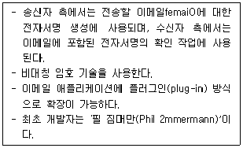
- PGP(Pretty Good Privacy)
- PKI(Public-Key Infrastructure)
- MIME(Multipurpose Internet Mail Extensions)
- IKE(lnternet Key Exchange)
(정답률: 66%)
54. S/MIME이 수행하는 기능이 아닌 것은?
- 메시지 기밀성 보호
- 메시지 무결성 보호
- 송신자 인증
- 악성 메일 차단
(정답률: 66%)
55. 다음 중 포맷 스트링 취약점 점검 툴이 아닌 것은?
- gdb
- objdump
- Itrace
- tcpdump
(정답률: 63%)
56. 다음은 웹서버 로그에서 볼 수 있는 상태코드로 HTTP/1.1 에서 정의한 것이다, 이 중 잘못된 것은?
- 304 : Not Modified
- 403 : Forbidden
- 404 : Method Not Allowed
- 504 : Gateway Timeout
(정답률: 65%)
57. 다음 중 SSO(Single Sign On)의 장점이 아닌 것은?
- 운영 비용 감소
- 관리자 서버의 업무 부담이 상대적으로 적다,
- 사용자 편의성 증가
- 중앙 집중 관리를 통한 효율성 증대
(정답률: 49%)
58. 아래 지문은 크로스사이트 요청 우위조(CSRF)의 보안대책을 설명한 것이다. 다음 중 ( ) 안에 들어갈 내용이 맞게 구성 된 것은?
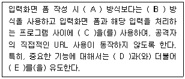
- (A) : GET, (B) : POST, (C) : 세션, (D) : 사용자 세션검증, (E) : 재사용
- (A) : POST, (B) : GET, (C) : 세션, (D) : 쿠키 식별, (E) : 재사용
- (A) : POST, (B) : GET, (C) : 토큰, (D) : 쿠키 식별, (E) : 재인증
- (A) : GET, (B) : POST, (C) : 토큰, (D) : 사용자 세션 검증, (E) : 재인증
(정답률: 56%)
59. S/MIME(Secure/Multipurpose internet Mail Extension)은 기존 전자우편 보안시스템의 문제점인 PEM 구현의 복잡성, PGP의 낮은 보안성과 기존 시스템과의 통합이 용이하지 않 다는 점을 보완하기 위해 IETF의 작업그룹에서 RSADSI(RSA Data Security Incorporation)의 기술을 기반 으로 개발된 전자우편 보안이다. S/MIME이 달성하고자 하는 목표가 아닌 것은?
- 강력한 암호화
- 디지털 서명
- 상호 운영성
- 키 관리의 간소화
(정답률: 40%)
60. 소프트웨어 수명주기(Life-Cycle) 모형 중 프로토타이핑(Prototyping) 모형의 가장 큰 장점이라고 볼 수 있는 것은?
- 개발비용의 절감
- 4세대 언어의 적용
- 개발단계의 명확성
- 사용자 요구사항의 정확한 파악
(정답률: 57%)
4과목: 정보 보안 일반
61. 다음 중 DES 및 3-DES에 관한 설명으로 잘못된 것은?
- DES의1 F-함수는 8개의 S-box로 구성되어 있으며, 각 S-box는 6비트 입하 4비트 출력을 갖는다.
- DES의 S-box는 모두 선형(Linear) 구조이며 DES의 안전성의 핵심 모듈이다.
- DES의 F-함수의 확장(Expansion)은 입력 32비트를 출력 48비트로 확장하는 과정이다.
- 3-DES는 2개 또는 3개의 서로 다른 키를 이용하여 DES 를 반복 적용하는 것이다.
(정답률: 46%)
62. 사용자 인증을 위해 사용되는 생체인식 기술의 요구조건이 아닌 것은 무엇인가?
- 보편성
- 구별성
- 영구성
- 시간 의존성
(정답률: 87%)
63. 스트림 암호에 관한 설명으로 잘못된 것은?
- 이진 수열(비트)로 된 평문과 키 이진 수열 비트 단위로 XOR하여 암호화 한다.
- 암호화 알고리즘에 치환변환과 전치변환이 주로 쓰인다,
- 주로 유럽을 중심으로 발전하였으며 군사용으로 쓰인다.
- 일회용 패드(One-Time Pad)는 스트림 암호의 한 예이다.
(정답률: 47%)
64. 전자서명에서 사용되는 해시 함수(H)와 관련한 설명으로 옳지 않은 것은?
- 해시 값 h가 주어져 있을 때 h=H(M) 인 메시지 M 을 찾는 일은 시간이 아주 많이 걸리는 일이어야 한다.
- 메시지 M이 주어져 있을 때, H(M)-H(M')인 다른 메시지 M' 을 찾는 일은 시간이 아주 많이 걸리는 일이어야 한다.
- H(M)=H(M')인 서로 다른 두 메시지 M과 M'을 찾는 일 은 시간이 아주 많이 걸리는 일이어야 한다.
- 해시 힘수의 출력의 크기는 해시 함수의 안전성과는 무관 하지만, 해시 함수 계산 시간에는 많은 영향을 미친다.
(정답률: 50%)
65. 다음 중 무결성(Integrity) 점검을 위한 해시 함수가 아닌 것은?
- tripwire
- MD5
- SHA-256
- RIPEMD-160
(정답률: 72%)
66. 최근 입사하여 소속 부서의 프린터 관리를 담당하게 된 홍길동은 이전 담당자의 자원 접근 권한을 그대로 인계 받아 업무를 수행하게 되었다. 이러한 상황과 가장 관련성이 높은 접근 통제 기술은 무엇인가?
- 강제적 접근통제(MAC)
- 임의적 접근통제(DAC)
- 역할기반 접근통제(RBAC)
- 다단계 보안정책(MLS)
(정답률: 66%)
67. 일방향 해시(hash) 함수 MD5의 출력 해시의 크기는?
- 128비트
- 256비트
- 512비트
- 1024비트
(정답률: 60%)
68. 아래 지문에 가장 적합한 세션키(Session key) 키 분배 방 법은?
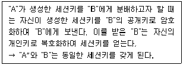
- Diffie - Heilman 키 분배
- KDC 기반 키 분배
- RSA 알고리즘을 이용한 키 분배
- Needham-Schroeder 키 분배
(정답률: 46%)
69. 메시지의 무결성 보장과 송신자에 대한 인증을 목적으로 공유 비밀키와 메시지로부터 만들어지는 것은?
- 의사
- 메시지 인증 코드
- 해시
- 인증서
(정답률: 70%)
70. 다음 중 아래 괄호 부분에 들어갈 내용으로 적합한 것은?
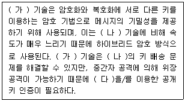
- (가) 일방향 해시함수, (나) 대칭키 암호, (다) 공개키 암호기술
- (가) 일방향 해시함수，(나) 메시지 인증 코드, (다) 전자 서명
- (가) 공개키 암호 (나) 메시지 인증 코드, (다) 대칭키 암호기술
- (가) 공개키 암호, (나) 대칭키 암호, (다) 전자 서명
(정답률: 61%)
71. 컴퓨터 보안에서 사용되는 암호에 관한 설명 중 옳은 것은?
- 암호는 정당한 권한이 부여된 사용자만이 데이터의 내용을 파악할 수 있는 데이터의 가용성을 보장해 준다.
- 암호는 수신된 메시지가 불법적으로 재생된 것인지 또는 전송과정에서 변조, 재구성되었는지 등을 확인할 수 있는 무결성을 보장한다.
- 암호는 수신된 메시지가 정당한 송신자로부터 전송된 것인지를 확인할 수 있는 기밀성을 보장한다.
- 암호는 메시지를 특정 수신자에게 전송할 때 송신자는 그 메시지의 발송을 나중에 부인할 수가 없고 또한 송신자에 의헤서 발송되지 않은 메시지를 받았다고 수신자가 주장 할 수 없도록 하는 인증을 보장한다,
(정답률: 41%)
72. 전자입찰시스템의 요구조건을 기술한 다음 지문의 ( )안에 들어갈 단어를 순서대로 나열한 것은?
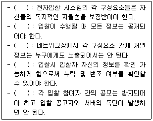
- 비밀성, 안정성, 독립성, 무결성, 공평성
- 비밀성, 공평성, 독립성, 무결성, 안정성
- 독립성, 안전성, 비밀성, 무결성, 공평성
- 독립성, 공평성, 비밀성, 무결성, 안정성
(정답률: 66%)
73. 암호 해독자가 일정량의 평문에 해당하는 암호문을 알고 있을 경우 암호 키를 찾아내는 암호 공격 방식은?
- 암호문 단독 공격
- 기지 평문 공격
- 선택 평문 공격
- 선택 암호문 공격
(정답률: 45%)
74. 접근통제 모델 중 기밀성을 강조한 최초의 수학적 모델로 시스템 보안을 위한 규칙 준수 규정과 주체의 객체 접근 허용 범위를 규정한 것으로 옳은 것은?
- 벨-라파듈라 모델
- 비바 모델
- 클락-윌슨(Clark-Wilson) 모델
- 만리장성 모델
(정답률: 72%)
75. 접근통제 모델 중 정보의 소유자가 정보의 보안 수준을 결정하고 이에 대한 정보의 접근 통제까지 설정하는 모델은 무엇 인가?
- DAC(Discretionary Access Control)
- MAC((Mandatory Access Control)
- RBAC(Role-Based Access Control)
- HAC(Horizon Access Control)
(정답률: 60%)
76. 다음 중 블록 암호 알고리즘의 종류가 아닌 것은?
- RC5
- MD5
- DES
- IDEA
(정답률: 26%)
77. SET에서 도입된 기술로 고객의 구매 정보는 은행이 모르게 하고 지불 정보는 상점이 모르게 하기 위해 사용하는 서명 방식은?
- 은닉 서명
- 그룹 서명
- 수신자 지정 서명
- 이중 서명
(정답률: 63%)
78. 다음은 어떤 전자서명 방식에 대한 설명인가?
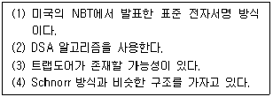
- KCDSA
- DSS
- FFS
- ElGameil
(정답률: 45%)
79. 다음에서 설명하는 블록 암호 공격 기법은?
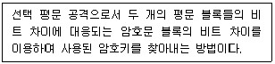
- 차분 공격
- 선형 공격
- 통계적 분석
- 치환 공격
(정답률: 70%)
80. 우리나라 표준 서명 알고리즘으로 가장 적절한 것은?
- RSA
- KCDSA
- ECC
- ECDSA
(정답률: 81%)
5과목: 정보보안 관리 및 법규
81. 지문에서 설명하는 위험분석 방법은 무엇인가?
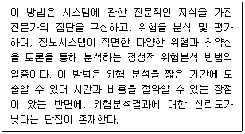
- 연간예상손실 계산법
- 과거 통계자료 분석법
- 델파이법
- 시나리오 기반 분석법
(정답률: 59%)
82. 인터넷 보안 프로토콜에 해당하지 않는 것은?
- SSL
- HTTPS
- S/MIME
- TCSEC
(정답률: 55%)
83. 다음 설명은 정보의 속성 중에서 무엇을 설명한 것인가?
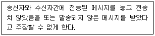
- 비밀성
- 인증
- 부인방지
- 액세스제어
(정답률: 77%)
84. 다음은 ”정보통신망 이용촉진 및 정보보호 등에 관한 법률"의 목적규정 내용 중 ( ) 에 적합한 내용은?
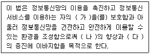
- 가: 권익보호, 나: 서비스의 품질, 다: 공공복리
- 가: 인격보호, 나: 보안의식, 다: 표준화
- 가: 이용권，나: 정보통신기술，다: 정보화
- 가: 개인정보，나: 국민생활，다: 공공복리
(정답률: 45%)
85. 다음의 지문은 무엇에 대한 설명인가?
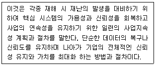
- 위험관리
- 업무 연속성 계획
- 재난 대비 가용성 확보 대책
- 피해 복구 대책
(정답률: 53%)
86. 다음과 같은 개인정보보호에 대한 시책 마련은 어느 법률에서 규정하고 있는가?
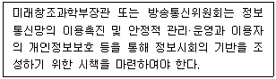
- 국가정보화 기본법
- 개인정보보호법
- 정보통신기반 보호법
- 정보통신망 이용촉진 및 정보보호 등에 관한 법률
(정답률: 53%)
87. 정량적 위험분석과 정성적 위험분석에 대한 다음의 설명 중 틀린 것은?
- 정량적 분석은 객관적인 평가기준이 적용된다.
- 정량적 분석은 위험관리 성능평가가 용이하다.
- 정성적 분석은 계산에 대한 노력이 적게 소요된다.
- 정성적 분석은 비용과 이익에 대한 평가가 필수적으로 요구된다.
(정답률: 52%)
88. 『정보통신망 이용촉진 및 정보보호 등에 관한 법률』 에서 규정하고 있는 내용이 아닌 것은?
- 주요정보통신기반시설의 보호체계
- 정보통신망에서의 이용자 보호 등
- 정보통신망의 안정성 확보 등
- 개인정보의 보호
(정답률: 35%)
89. 다음의 ISMS 인증 의무 대상자에 대한 설명으로 잘못 기술된 것은?
- 전기통신사업법의 전기통신사업자로 전국적으로 정보통신망 서비스를 제공히는 사업자
- 타인의 정보통신서비스 제공을 위하여 집적된 정보통신시 설을 운영 • 관리하는 사업자
- 정보통신서비스 부문 전년도 매출액 100억 이상 사업자
- 전년도말 기준 직전 6월간 일일 평균 이용자 수 100만명 이상 사업자
(정답률: 31%)
90. 다음 중「정보통신기반보호법」상 국가안전보장에 중대한 영향을 미치는 것으로서 관리기관의 장이 기술적 지원을 요청 하는 경우 국가정보원장에게 우선적으로 그 지원을 요청하여야 하는 주요정보통신기반기설에 해당하지 아니하는 것은?
- 도로·철도·지하철·공항·항만 등 주요 교통시설
- 전력, 가스, 석유 등 에너지 수자원 시설
- 방송중계·금융정보통신기반시설
- 원자력·국방과학·첨단방위산업관련 정부출연 연구기관의 연구시설
(정답률: 66%)
91. 다음의 보기 중에서 일반직원 대상의 통상적인 정보보호 교육 및 훈련의 내용에 해당되지 않는 것은?
- 정보보호 요구사항
- 정보보호 사고 발생 시의 사용자의 법적인 책임
- 조직의 정보보호 관리통제 방법
- 조직의 정보보호 시스템 구성도 및 운영방법
(정답률: 30%)
92. 다음 중 정보통신서비스 제공자 등이 개인정보의 분실，도난，누출 사실을 안 때에는 지체 없이 수행해야 할 행동으로 잘못 기술된 것은?
- 방송통신위원회 또는 한국인터넷진흥원에 신고하여야 한다.
- 정당한 사유 없이 그 사실을 안 때부터 5일을 경과하여 통지 신고해서는 아니 된다.
- 이용자에게 알릴 때에는 누출 등이 된 개인정보 항목이 포함된다，
- 한국인터넷진흥원이 신고를 받았다면 그 사실을 방송통신 위원회에 알려야 한다.
(정답률: 38%)
93. 다음은 정보통신서비스 제공자가 정보통신망법의 규정을 위반하여 부당하게 되는 손해배상책임에 관한 규정이다. ( )에 적합한 용어는?
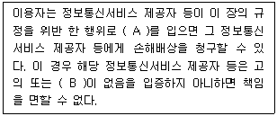
- A : 불명예, B : 과실
- A : 손해, B : 부주의
- A : 이익, B : 손해
- A : 손해, B : 과실
(정답률: 56%)
94. 위험관리의 개념에서 위험 완화 방법에 대한 설명으로 옳지 않은 것은?
- 회피(avoidance)는 특정 위험으로부터의 손실 부담 또는 위험 획득을 수용하는 것이다.
- 이전(transfer)은 잠재적 비용을 제3자에게 전가하거나 할당하는 것이다.
- 감소(reduction)는 위힘을 감소시킬 수 있는 대책을 채택하여 구현하는 것이다.
- 수용(acceptance)은 위험을 받아들이고 비용을 감수하는 것이다.
(정답률: 76%)
95. 아래는 정보통신망 이용촉진 및 정보보호 등에 관한 법률의 한 규정의 내용이다. ( )안에 들어갈 말로서 바르게 나열된 것은?
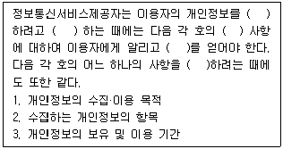
- 이용 - 수집 - 모든 - 동의 - 변경
- 이용 - 보유 - 개별 - 양해 - 수정
- 사용 - 보유 - 개별 - 양해 - 수정
- 이용 - 수집 - 모든 - 양해 - 변경
(정답률: 60%)
96. 다음 중「전자서명법」에 의거하여 공인인증기관이 발급하는 공인인증서에 포함되는 사항이 아닌 것은?
- 가입자와 공인인증기관이 이용하는 전자인증 방식
- 공인인증서의 일련번호
- 공인인증기관의 명칭 등 공인인증기관임을 확인할 수 있는 정보
- 공인인증서의 이용범위 또는 용도를 제한하는 경우 이에 관한 사항
(정답률: 17%)
97. 다음의 지문은 무엇에 대한 설명인가?
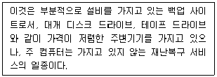
- 중복 시스템
- 핫 사이트(Hot site)
- 웜 사이트(Warm site)
- 콜드 사이트(Cold site)
(정답률: 46%)
98. 「정보통신망 이용촉진 및 정보보호 등에 관한 법률」상 개인 정보처리방침에 포함되어야 할 사항이 아닌 것은?
- 이용자 및 법정대리인의 권리와 그 행사 방법
- 개인정보에 대한 내부 관리 계획
- 인터넷 접속정보파일 등 개인정보를 자동으로 수집하는 장치의 설치·운영 및 그 거부에 관한 사항
- 개인정보의 수집·이용 목적, 수집하는 개인정보의 항목 및 수집 방법
(정답률: 22%)
99. 정보통신망 이용촉진 및 정보보호 등에 관한 법률상 정보통신 서비스 제공자는 임원급의 정보보호 최고책임자를 지정할 수 있도록 정하고 있다. 정보통신서비스 제공자의 정보보호 최고책임자가 총괄라는 업무에 해당하지 않는 것은? (단, 이 법에 명시된 것으로 한정함)
- 정보보호관리체계 수립 및 관리·운영
- 주요 정보통신기반시설의 지정
- 정보보호 취약점 분석·평가 및 개선
- 정보보호 사전 보안성 검토
(정답률: 52%)
100. 다음 보기 중에서 통상적으로 정보보호 정책서에 기술하지 않는 항목은?
- 정보보호 목적과 구성
- 정보보호 실행 계획 수립
- 보안에 대한 역할과 책임
- 정보보호 선언
(정답률: 63%)